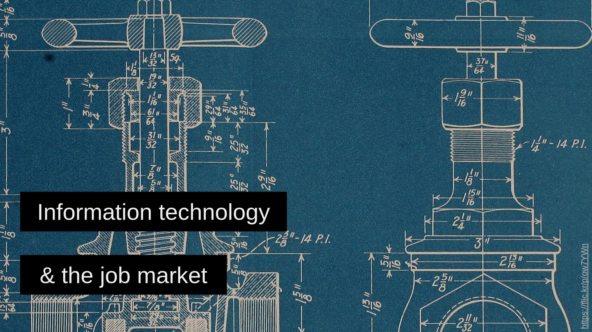

Talks
I give you a URL and you give me back LEGO bricks - OR - How to use an LLM to write your first scraper
Workshop at Dataharvest 2024, 2024/Jun/01
Participants will write a simple web scraper in python. An LLM will be used as a coding assistant to write the scraper’s skeleton and help participants overcome obstacles. Participants will also learn that LLMs, can’t be trusted blindly: judgment and domain expertise are needed to navigate the LLM’s answers. After this session participants will be able to implement a very basic web scraper with python; use an LLM as coding assistant and understand its limitations.
No coding skills are required. (Participants should be comfortable copy-pasting python code even if they don’t understand 100% what it’s doing). A very basic (even if abstract) understanding of what a web scraper does will help the participants follow the workshop flow. We will be using Google Collab (a web tool) to write and execute python; no additional software is needed on your computer.
Information technology & the job market
Invited lecture that reached ~510 students in 9 Computer Science university departments and 1 career day.

Abstract
The job market is not transparent. What does a computer science student need to know to be prepared for their first career choices? Salary trends will be analysed, both generally and specifically for the information technology sector. Useful steps that could be performed during studies will be presented. Finally, the “first job” job hunt will be discussed, in an effort to make the process a bit less stressful. The speaker will be happy if students get exposed to a couple of ideas that will be useful for their future careers.
(Greek) Η αγορά εργασίας είναι αδιαφανής. Τί πρέπει να γνωρίζει και πώς μπορεί να προετοιμαστεί ένας φοιτητής/τρια πληροφορικής για τις πρώτες επαγγελματικές επιλογές; Θα αναλυθούν μισθολογικές τάσεις στην αγορά εργασίας, τόσο γενικά όσο ειδικά για την πληροφορική. Επίσης θα παρουσιαστούν χρήσιμα βήματα που μπορούν γίνουν κατά την διάρκεια των πανεπιστημιακών σπουδών. Τέλος θα συζητηθεί η αναζήτηση της “πρώτης δουλειάς” ώστε η διαδικασία να γίνει λιγότερο αγχωτική. Ο ομιλητής θα είναι χαρούμενος αν οι φοιτητές/τριες ακούσουν ιδέες που θα φανούν χρήσιμες στην μετέπειτα επαγγελματική τους σταδιοδρομία.
Lectures
- International Hellenic University, Dept. of Information and Electronic Engineering, Argyris Koureas, 2024/May, slides
- Technical University of Crete, School of Electrical & Computer Engineering, Nikos Giatrakos, 2023/Oct, slides, video
- Hellenic Open University, Dept. of Informatics, Careers office, 2022/Jun, slides
- University of the Peloponnese, Researcher and Engineer Career Day, 2022/May, slides
- University of Aegean, Dept. of Information and Communication Systems Engineering, Yannis Charalabidis, 2022/Apr, slides
- Athens University of Economics and Business, Dept. of Management Science and Technology, Diomidis Spinellis, 2022/Jan, slides
- Aristotle University of Thessaloniki, Dept. of Informatics, Georgios Keramidas, 2021/Nov, slides
- University of Thessaly, Dept. of Electrical & Computer Engineering, Dimitrios Katsaros, 2021/Apr, slides
- University of Piraeus, Dept. of Informatics, Yannis Theodoridis - DataStories Lab, 2020/Nov, slides, video